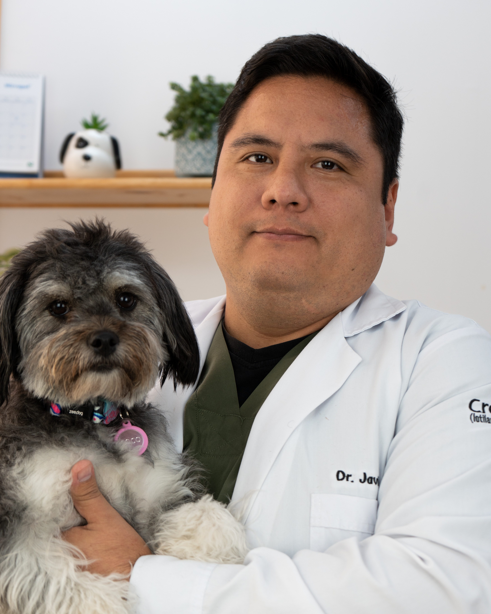
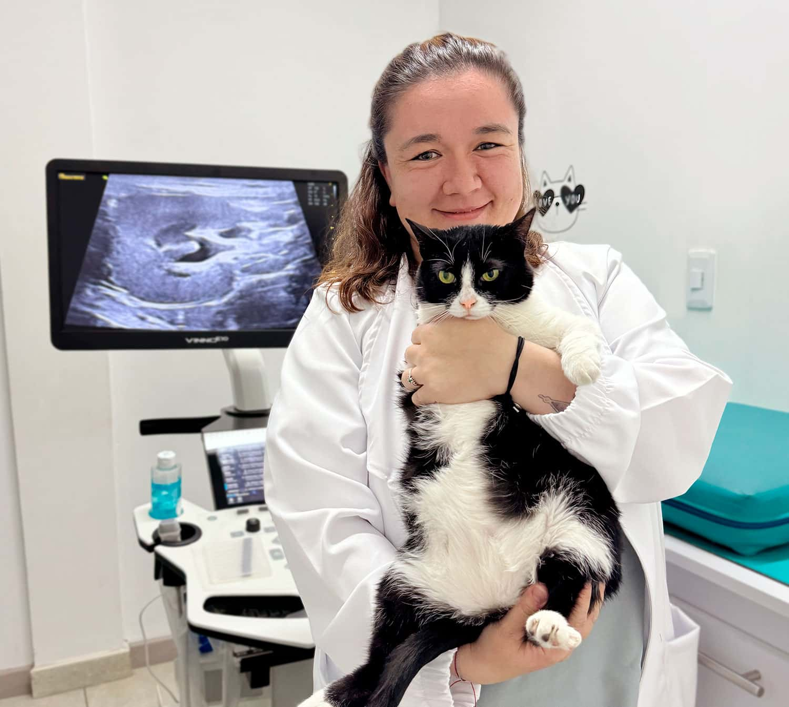

Misión
Brindar servicios veterinarios con calidad, responsabilidad y compromiso.
Atencion Medica
24 Horas

Garritas Peludas nació con el objetivo de brindar atención veterinaria de calidad, ofreciendo un servicio profesional, humano y confiable para todas las mascotas.
A lo largo de los años hemos incorporado tecnología, personal capacitado y nuevas especialidades para brindar una atención integral.
Brindar servicios veterinarios con calidad, responsabilidad y compromiso.
Ser una clínica veterinaria líder, reconocida por su excelencia y calidez.
Tratamos con respeto a nuestros clientes y mascotas.
Trabajamos con profesionalismo en cada atención.
Nos preocupamos por el bienestar de cada paciente.
Buscamos la mejora continua en nuestros servicios.

Médico Veterinario

Cirujano Veterinario

Especialista en Felinos